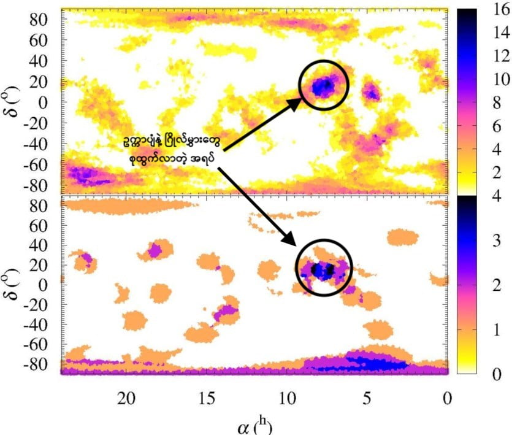

၂၀၁၅ ခုနှစ်မှာ နက္ခတ်ပညာရှင်တွေဟာ မမျှော်လင့်တဲ့ တွေ့ရှိမှုကြီး တစ်ခုကို တွေ့ရှိခဲ့ပါတယ်။ အဲ့တာကတော့ ဒီ လူသားမျိုးနွယ် မျိုးတုံးလုလု ဖြစ်နေတဲ့ ကာလလောက်မှာပဲ ကြယ်ပုလေး တစ်စင်းဟာ နေနဲ့ အလင်းနှစ် တစ်နှစ်လောက်ပဲ ဝေးတဲ့ နေရာကနေ အရှိန်အဟုန်နဲ့ ဖြတ်ပျံသွား ခဲ့တယ် ဆိုတာပဲ ဖြစ်ပါတယ်။
ဒီမှာ အချို့စိတ်ကူးယဉ် စာရေးဆရာတွေနဲ့ ကမ္ဘာပျက် ဆရာကြီးများက ဒီနှစ်ခုကို ဆွဲပြီး ကြယ်ပျံကြောင့် ကမ္ဘာပျက်မလို ဖြစ်ခဲ့လေဟန် လိုရာဆွဲ ရေးကြပါတော့တယ်။ ဒါပေမယ့် သိပ္ပံပညာရှင် များကတော့ ဒီနှစ်ခုဟာ ဘာမှ ဆက်စပ်မှု မရှိခဲ့ဘူးလို့ပဲ ဆိုကြပါတယ်။
ဒီနေရာဟာ ကျွန်တော်တို့ နေအဖွဲ့အစည်းရဲ့ အပြင်စည်း အဖြစ် သတ်မှတ်ထားတဲ့ နေရာဖြစ်ပါတယ်။ ဒီအပြင်စည်း နေရာမှာ အရေအတွက်အားဖြင့် ၁ ထရီလီယန် (၁ ထရီလီလီယံ = ၁,၀၀၀ ဘီလီယံ၊ ၁ ဘီလီယံ = သန်း ၁,၀၀၀) လောက်ပမာဏ ရှိတဲ့ ရေခဲတုံးတွေ ရှိနေတယ်လို့ နက္ခတ်ပညာရှင်တွေက ယူဆကြပါတယ်။ ဒီ အပြင်စည်းနေရာကို အော့တ်တိမ်တိုက် (Oort Cloud) လို့ အမည်ပေး ထားပါတယ်။ ခုနက ကြယ်ပျံလေးဟာ ဒီ အပြင်စည်း က အော့တ်တိမ်တိုက်ကို ရှပ်ပြီး ပျံသွားတာ ဖြစ်ပါတယ်။
ဒီ ကြယ်ပျံပုလေးကို ရှို့လ်ဇ် ကြယ် (Scholz’s Star) လို့ အမည်ပေး ထားပါတယ်။ မူလ တွေ့ရှိစဉ်က ဒီကြယ်ပုလေးဟာ နေအဖွဲ့အစည်းရဲ့ အပြင်စည်းကို ရှပ်ပျံသွားခဲ့ ပေမယ့် နေအဖွဲ့အစည်း အပေါ်မှာ ဘာမှ အကျိုးသက်ရောက်မှု တစုံတရာ မရှိခဲ့ဘူး လို့ပဲ ယူဆခဲ့ ကြပါတယ်။ ဒါပေမယ့် ယခု ထုတ်ပြန်လိုက်တဲ့ သုတေသန တွေ့ရှိချက် ရလဒ်သစ် အရဆို ဒီ ကြယ်ပျံဟာ ယခင် ယူဆခဲ့ သလောက် အန္တရာယ် မကင်းခဲ့ဘူးဆိုတာ တွေ့ရှိလာရပါတယ်။
ဒီ သုတေသန တွေ့ရှိချက်တွေကို ပြီးခဲ့တဲ့ “တော်ဝင် နက္ခတ်ဗေဒ အသင်းကြီး၏ လစဉ်ထုတ် စာစောင် (Monthly Notices of the Royal Astronomical Society: Letters)” မှာ တင်ပြခဲ့ပါတယ်။
ဒီသုတေသနမှာ ပညာရှင်တွေက နေအဖွဲ့အစည်းအတွင်းမှာ တွေ့ရှိရတဲ့ အရာဝတ္ထု သေးသေးလေးတွေရဲ့ ပတ်လမ်းတွေကို လေ့လာခဲ့ ကြတာ ဖြစ်ပါတယ်။ ဒီလေ့လာမှုမှာ နေကို ပတ်နေတဲ့ ဥက္ကာပျံတွေ၊ ဂြိုလ်သိမ်တွေနဲ့ ကြယ်တံခွန်တွေ ပါဝင်ပါတယ်။ စုစုပေါင်း အရာဝတ္ထု အရေအတွက် ၃၃၉ ခုရဲ့ ပတ်လမ်းတွေကို လေ့လာခဲ့ ကြတာ ဖြစ်ပါတယ်။ လေ့လာမယ့် အရာဝတ္ထုတွေကို ရွေးချယ်ရာမှာ သူတို့ရဲ့ လက်ရှိပတ်လမ်းတွေအတိုင်း ဆက်ပျံနေမယ်ဆို တဖြည်းဖြည်း နေအဖွဲ့အစည်းရဲ့ အပြင်ဖက်ကို လွတ်ထွက်သွားမယ့် အရာဝတ္ထုတွေကို လေ့လာဖို့ ရွေးချယ်ခဲ့တာပါ။
ဒီ အရာဝတ္ထု ၃၃၉ ခုရဲ့ ပတ်လမ်းတွေနဲ့ သူတို့အပေါ် သက်ရောက်နေတဲ့ နေ၊ ဂြိုလ်တွေနဲ့ အခြား အရာဝတ္ထုတွေရဲ့ ဆွဲငင်အားတွေကို ထည့်သွင်းတွက်ချက်ပြီး ကွန်ပျူတာနဲ့ Simulation လုပ် ပုံဖော်ကြည့်ခဲ့ကြပါတယ်။ ဒီလို ပုံဖော်ရာမှာ ယခုလက်ရှိ ပျံသန်းနေတဲ့ လမ်းကြောင်းတွေကနေ နောက်ကြောင်းပြန်ပြီး လွန်ခဲ့တဲ့ နှစ် ၁၀၀,၀၀၀ လောက်အထိ ကာလအထိ ပြန်ပုံဖော်ကြည့်ခဲ့ ကြတာ ဖြစ်ပါတယ်။ ဒီလို ပုံဖော်ကြည့်တဲ့ ရည်ရွယ်ချက်ကတော့ ဒီအရာ ဝတ္ထုတွေ ထွက်ပေါ်လာတဲ့ မူလဒေသကို ရှာဖွေချင်လို့ပဲ ဖြစ်ပါတယ်။
ဒီလို simulate လုပ် ပုံဖော်ပြီး ရှာဖွေတွေ့ရှိတဲ့ မူရင်းဒေသတွေကို ကြည့်လိုက်တဲ့ အခါ ဒီ အရာဝတ္ထုတွေရဲ့ ၁၀ ရာခိုင်နှုန်း (၃၆ ခု) လောက်က မေထုန်ရာသီခွင် (Constellation Gemini) ရှိနေတဲ့ အရပ်ကနေ ရောက်လာတယ် ဆိုတာ တွေ့ရှိကြရပါတယ်။ ဒီအရပ် ဒေသဟာ အပေါ်က ပြောခဲ့တဲ့ ကြယ်ပျံ လွန်ခဲ့တဲ့ နှစ် ၇၀,၀၀၀ က ရှပ်ပျံသွားတာကြောင့် လွင့်ထွက်လာမယ့် အရာဝတ္ထုတွေ ထွက်ပေါ်လာမယ်လို့ အခြား ပညာရှင်တွေက ဟောကိန်းထုတ်ထားခဲ့တဲ့ အရပ်ဒေသလဲ ဖြစ်ပါတယ်။

“ရူပဗေဒ သီအိုရီတွေ အရ ဆိုရင်တော့ ဒီအရာဝတ္ထုတွေ ထွက်ပေါ်လာတဲ့ အရပ်ဒေသတွေဟာ ကောင်းကင် တပြင်လုံးမှာ ညီညီညာညာ ပျံ့နှံ့ပြီး နေသင့်ပါတယ်။ အထူးသဖြင့် အော့တ်တိမ်တိုက်ကနေ မြစ်ဖျားခံ လာတဲ့ အရာဝတ္ထုတွေ ဆိုရင် ပိုလို့တောင် ညီညီညာညာ ပျံနေရမှာပါ။ ဒါပေမယ့် ကျွန်တော်တို့ တွက်ကြည့်လို့ ထွက်လာတဲ့ အဖြေက ဒီလို ဖြစ်မနေပါဘူး။ ကောင်းကင်မှာ ဒီအရာဝတ္ထုတွေ စုပြီး ထွက်လာခဲ့တဲ့ နေရာ တကွက် သွားတွေ့ရလို့ပါ။ ဒါက ပုံမှန်ထက် ထူးခြားတဲ့ တွေ့ရှိချက် တရပ် ဖြစ်ပါတယ်။”
“ဒီစုပြီး ထွက်လာတဲ့ အရပ်ကလဲ မေထုန်ရာသီခွင် (Constellation Gemeni) ရှိတဲ့ဖက်က ဖြစ်ပါတယ်။ ဒါက အခြား ပညာရှင်တွေ ရှို့လ်ဇ်ကြယ်ပုလေး ဖြတ်ပျံသွားခဲ့တယ်လို့ တွက်ချက်ထား ခဲ့တဲ့ အရပ်ပဲ ဖြစ်နေပါတယ်။”
ယခု သုတေသနမှာ ကြယ်ပျံကြောင့် လွင့်ထွက်လာတာ ဖြစ်နိုင်တဲ့ အရာဝတ္ထုတွေကို တွေ့ရှိခဲ့ရသလို နေအဖွဲ့အစည်းရဲ့ အပြင်ဖက်က ရောက်လာနိုင်ခြေရှိတဲ့ အရာဝတ္ထု ၈ ခုကိုလဲ ရှာဖွေတွေ့ရှိခဲ့ပါတယ်။ ဒီ အရာဝတ္ထု ၈ ခုဟာ အလွန်လျှင်မြန်တဲ့ အမြန်နှုန်းနဲ့ ရွေ့လျားနေတာမို့ နေအဖွဲ့အစည်း အပြင်ဖက်က လာတာလို့ ပြောနိုင်တာ ဖြစ်ပါတယ်။
ဒီ ၈ ခုကို နေအဖွဲ့အစည်း အပြင်ဖက်က လာတယ်လို့ ပြောနိုင်တဲ့ နောက်တချက်က သူတို့လာတဲ့ လမ်းကြောင်းက အခြား ဝတ္ထုတွေ လာတဲ့ လမ်းကြောင်းနဲ့ မတူပဲ သီးသန့် ဖြစ်နေတာကြောင့်လဲ ဖြစ်ပါတယ်။ ဒိအထဲက နှစ်ခုဟာ ဆိုရင် တစ်နာရီကို မိုင် ၉,၀၀၀ နှုန်းနဲ့ ရွေ့လျားနေတာ ဖြစ်ပါတယ်။ ဒီအမြန်နှုန်းက ပုံမှန် နေအဖွဲ့အစည်းထဲက ဥက္ကာပျံတွေ၊ ဂြိုလ်သိမ်တွေ၊ ကြယ်တံခွန်တွေ သွားတဲ့ အမြန်နှုန်းထက် ပိုမြန်နေပါတယ်။ ဒါက ဘာကို ပြနေလဲ ဆိုတော့ ဒီ ဝတ္ထုတွေဟာ နေအဖွဲ့အစည်းရဲ့ အပြင်ကနေ ရောက်လာတယ် ဆိုတာကို ပြနေတာပါ။
အခုသုတေသန ရလဒ်တွေကို ပညာရှင် အားလုံးက လက်ခံတာတော့ မဟုတ်သေးပါဘူး။ ပညာရှင် အချို့က ထောက်ပြကြတာကတော့ အခုသုတေသနမှာ လေ့လာခဲ့တဲ့ ဝတ္ထုတွေရဲ့ တည်နေရာနဲ့ လမ်းကြောင်းတွေဟာ သိပ်ပြီး တိကျမှု မရှိလှဘူးလို့ ဆိုပါတယ်။ ဒီလို တိကျမှု မရှိတဲ့ အတွက် ရရှိတဲ့ ရလဒ်ကလဲ တိကျမှာ မဟုတ်ဘူးလို့ ထောက်ပြပါတယ်။
ဒီသုတေသနဟာ ဒီကြယ်ပုလေး နေအဖွဲ့အစည်းနားက ကပ်ပျံသွားခဲ့တယ် ဆိုတာကို သက်သေပြဖို့ နောက်ထပ် အထောက်အထား တစ်ခုဖြစ်ပါတယ်။ ဒါပေမယ့် ဒီသုတေသန ရလဒ်တွေကို အတည်ပြုဖို့ အတွက် နောက်ထပ် သုတေသနတွေတော့ ထပ်ပြီးလုပ်ဖို့ လိုအပ်အုံးမှာ ဖြစ်ပါတယ်။
နောက်ပြီး ဒီကြယ်ပျံက Oort တိမ်တိုက်ထဲက အရာဝတ္ထုတွေကို လမ်းကြောင်းပြောင်းလဲအောင် နှောက်ယှက်ခဲ့သည့်တိုင် ကမ္ဘာနဲ့ နေအဖွဲ့အစည်းရဲ့ အခြားဂြိုလ်တွေအပေါ် သက်ရောက်မှု တစုံတရာ ရှိခဲ့တဲ့ အထောက်အထားလဲ မတွေ့ရပါဘူး။ ဒါ့ကြောင့် ကမ္ဘာပျက် ဆရာကြီးများ ပြောသလို ကြယ်ပျံနဲ့ လူသားမျိုးနွယ်တုံးလုဖြစ်စဉ် နှစ်ခုဟာ ဘာမှ သက်ဆိုင်ခြင်း မရှိပါဘူးဆိုတာ တင်ပြလိုက်ရပါတယ်။
Reference:
Wandering star shook up the prehistoric solar system | Astronomy
Scholz’s Star | Wikipedia